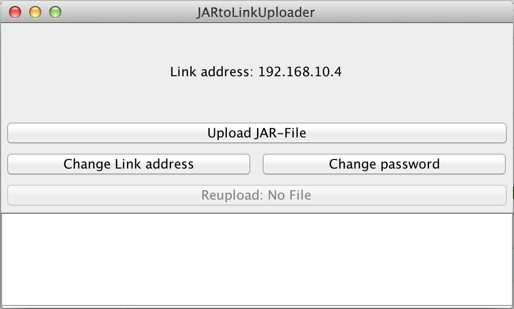
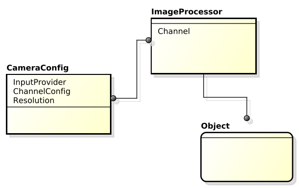

LinkJVM 2.0
Java on the KIPR Link
Markus Klein / kleiinnn
Christoph Hackenberger / chackenberger
Agenda
-
JavaEnvironment:
- JVM, GNU Classpath and Development Tools
- Deploying Java programs on the Link
- Integration into Link's build system
-
Robot Library:
- Design Approach
- Features
- Vision System
What is LinkJVM
- Java Runtime Enironment(JamVM)
- Java compiler and other tools(javac, jar, ...)
- Library for controlling the robot with Java
LinkJVM allows execution of programs written in Java a any JVM language(Scala, JavaScript(Rhino), ...).
Java Environment, Build System and Utils
The Java environment includes to following components:
- Java Developing Tools (javac, jar, ...)
- Java Virtual Machine (JVM)
- Java SE implementation (GNU Classpath)
GNU Classpath
GNU Classpath is a open source and lightweight implementation of the Java core classes (Java SE).
JamVM (LinkJVM's JVM)
JamVM is a very and simple JVM designed for low end systems. JamVM has already been used in CBCJVM (Java for the CBC.
Development Tools
LinkJVM provides also provides javac and jar for compiling and packaging java programs directly on the Link.
Developing and deploying Java programs on the Link
- There is no possibility for running java binaries directly over BotUI yet.
- Therefore the java program must be wrapped by a c wrapper.
- The Link needs a kiss archive (kar) to find the program.
All these step require knowledge about linux, shell and the KIPR Link itself.
⇒Solution: LinkJVM-Uploader.
LinkJVM-Uploader
LinkJVM-Uploader automatically wraps and uploads an runable jar file to the LinkJVM.
Integrations into Link's build system
- Link runs a linux distribution and build framework called OpenEmbedded which has its own build system BitBake
- In BitBake packages are described in recipes.
- This recipe can extend another build system like CMake or Make.
- LinkJVM uses CMake for compiling the Java and C++ part in combination with a recipe whcih extends CMake.
Robot Library
Design Approach
- LinkJVM's Robot Library wraps over libkovan using the Java Native Interface (JNI).
- The wrapper classes (stored in the low package) are generated using SWIG (Simplified Wrapper and Interface Generator) and consist of a Java and a C++ part.
- Using this approach new features in libkovan can be implemented very fast and easily
- These jni classes are again wrapped by the high-level API to provided a good seperation between the Java and the JNI part
C++ wrapper
SWIGEXPORT jboolean JNICALL Java_linkjvm_low_linkjvm_1batteryJNI_Battery_1isCharging(JNIEnv *jenv, jclass jcls) {
jboolean jresult = 0 ;
bool result;
(void)jenv;
(void)jcls;
result = (bool)Battery::isCharging();
jresult = (jboolean)result;
return jresult;
}
Design Approach

Design Approach - Example

Robot Library Features
- iRobot Create
- motors and servos
- analog and digital sensors
- hardware and software buttons
- vision system
- depth camera (experimental)
- AR.Drone 1.0/2.0
Vision System
LinkJVM's vision system basically consists of 3 parts:
ImageProcessor: Processes the image to color or QR blobs and provides them asCameraObjects.CameraObject: Represents an object tracked by anImageProcessor.CameraConfig: Contains several configuration attributes for anImageProcessor.
Vision System
{The End}
Made with <3
Contact: m@mklein.co.at
© 2014, Markus Klein / © 2014, Christoph Hackenberger / © 2014, LinkJVM